<!DOCTYPE html>


<html lang="en">
  

    <head>
      <meta charset="utf-8" />
        
      <meta
        name="viewport"
        content="width=device-width, initial-scale=1, maximum-scale=1"
      />
      <title>【渲染】基础——渲染管线(Rendering Pipeline) |  半个出家人</title>
  <meta name="generator" content="hexo-theme-ayer">
      
      <link rel="shortcut icon" href="/img/circle_image.png" />
       
<link rel="stylesheet" href="/dist/main.css">

      
<link rel="stylesheet" href="/css/fonts/remixicon.css">

      
<link rel="stylesheet" href="/css/custom.css">
 
      <script src="https://cdn.staticfile.org/pace/1.2.4/pace.min.js"></script>
       
 

      <link
        rel="stylesheet"
        href="https://cdn.jsdelivr.net/npm/@sweetalert2/theme-bulma@5.0.1/bulma.min.css"
      />
      <script src="https://cdn.jsdelivr.net/npm/sweetalert2@11.0.19/dist/sweetalert2.min.js"></script>

      <!-- mermaid -->
      
      <style>
        .swal2-styled.swal2-confirm {
          font-size: 1.6rem;
        }
      </style>
    <link rel="alternate" href="/atom.xml" title="半个出家人" type="application/atom+xml">
</head>
  </html>
</html>


<body>
  <div id="app">
    
      
    <main class="content on">
      <section class="outer">
  <article
  id="post-Basic-Render-pipeline"
  class="article article-type-post"
  itemscope
  itemprop="blogPost"
  data-scroll-reveal
>
  <div class="article-inner">
    
    <header class="article-header">
       
<h1 class="article-title sea-center" style="border-left:0" itemprop="name">
  【渲染】基础——渲染管线(Rendering Pipeline)
</h1>
 

      
    </header>
     
    <div class="article-meta">
      <a href="/2020/10/25/Basic-Render-pipeline/" class="article-date">
  <time datetime="2020-10-24T18:32:00.000Z" itemprop="datePublished">2020-10-25</time>
</a> 
  <div class="article-category">
    <a class="article-category-link" href="/categories/CG-Rendering/">CG&Rendering</a>
  </div>
  
<div class="word_count">
    <span class="post-time">
        <span class="post-meta-item-icon">
            <i class="ri-quill-pen-line"></i>
            <span class="post-meta-item-text"> Word count:</span>
            <span class="post-count">4.5k</span>
        </span>
    </span>

    <span class="post-time">
        &nbsp; | &nbsp;
        <span class="post-meta-item-icon">
            <i class="ri-book-open-line"></i>
            <span class="post-meta-item-text"> Reading time≈</span>
            <span class="post-count">15 min</span>
        </span>
    </span>
</div>
 
    </div>
      
    <div class="tocbot"></div>


  
    <div class="article-entry" itemprop="articleBody">
       
  <h2 id="渲染管线概览"><a href="#渲染管线概览" class="headerlink" title="渲染管线概览"></a>渲染管线概览</h2><h3 id="基本概念"><a href="#基本概念" class="headerlink" title="基本概念"></a>基本概念</h3><h4 id="渲染管线（流水线）"><a href="#渲染管线（流水线）" class="headerlink" title="渲染管线（流水线）"></a>渲染管线（流水线）</h4><p>《Render-Time Rendering Third Edition》一书中将计算机图形渲染的流程划分为3个阶段<br>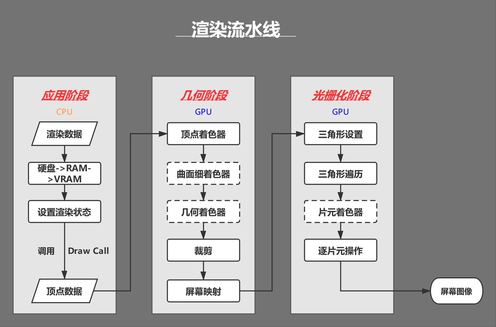<br>定义：也称渲染流水线，是显示芯片内部处理图形信号<strong>相互独立</strong>的<strong>并行</strong>的处理单位。</p>
<blockquote>
<p>一个<strong>流水线</strong>是一序列可以<strong>并行</strong>和<strong>按固定顺序进行</strong>的阶段。也就是说每个阶段都是从它的前一阶段输入，然后输出发给随后的阶段。</p>
</blockquote>
<p>渲染机理：将图像所具备的图形信息（顶点、纹理、材质、摄像机位置等）经过一系列阶段的处理，最终转换成屏幕上的图像。<br>实质是输入3D模型，输出2D图片显示出来的过程</p>
<p><strong>渲染过程中的坐标转换：物体空间-&gt;世界空间-&gt;观察空间-&gt;裁剪空间-&gt;屏幕空间</strong></p>
<h4 id="Shader"><a href="#Shader" class="headerlink" title="Shader"></a>Shader</h4><p>此处的Shader区别于Unity Shader文件<br>Shader（着色器），是一种较为短小的程序片段，用于告诉图形硬件如何加速输出图像，过去是有汇编语言来编写。<br>总而来说，Shader是<strong>可编程图形管线的算法片段</strong><br>分类:</p>
<ul>
<li>Vertex Shader</li>
<li>Fragment Shader</li>
</ul>
<p>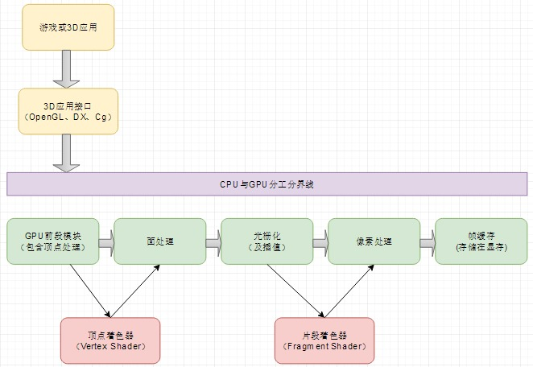<br>物体空间-&gt;世界空间-&gt;观察空间-&gt;裁剪空间-&gt;屏幕空间<br><strong>Shader和材质、贴图的关系：</strong><br>Shader将顶点数据以指定的方式和贴图或者颜色组合起来，将输出数据绘制到屏幕上。<br><strong>材质</strong>就是将<strong>Shader</strong>以及<strong>输入参数（包括贴图）</strong>打包存储起来，将材质赋予到三维物体上进行渲染<br>这样就是说材质就是引擎最终使用的商品（每个渲染的物体都需要一个材质）<br>Shader就是生产这种商品的加工过程或方法，贴图就是商品材料之一。</p>
<h3 id="三个阶段"><a href="#三个阶段" class="headerlink" title="三个阶段"></a>三个阶段</h3><p>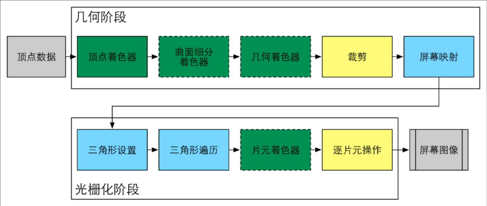<br>绿色表示完全可编程控制，黄色表示可配置，蓝色表示由GPU固定实现，不可修改。实线表示必须由开发者编程实现，虚线表示该Shader是可选的。</p>
<h4 id="应用阶段-Application-Stage-CPU"><a href="#应用阶段-Application-Stage-CPU" class="headerlink" title="应用阶段 Application Stage ( CPU )"></a>应用阶段 Application Stage ( CPU )</h4><p><strong>目标：</strong> 准备好场景数据，设置好渲染状态，然后输出渲染图元（rendering primitives），即为下一阶段提供所需的几何信息。</p>
<blockquote>
<p><strong>图元</strong>是指渲染的基本图形，通俗来讲图元可以是顶点，线段，三角面等，复杂的图形可以通过渲染多个三角形来实现。</p>
</blockquote>
<p>可细分为3个子阶段</p>
<h5 id="加载数据到显存"><a href="#加载数据到显存" class="headerlink" title="加载数据到显存"></a>加载数据到显存</h5><p>所有渲染所需的数据都需要从硬盘加载到系统内存中（RAM），然后网格和纹理等数据又被加载到显存（VRAM）。这是因为显卡对于显存的访问速度更快，而且大多数显卡对于RAM没有直接的访问权利。</p>
<h5 id="设置渲染状态"><a href="#设置渲染状态" class="headerlink" title="设置渲染状态"></a>设置渲染状态</h5><p>比如设置使用的着色器，材质，纹理，光源属性等。</p>
<h5 id="调用DrawCall"><a href="#调用DrawCall" class="headerlink" title="调用DrawCall"></a>调用DrawCall</h5><p>Draw Call就是一个命令，它的发起方是CPU，接收方是GPU。这个命令仅仅会指向一个需要被渲染的图元列表，而不会再包含任何材质信息，这是因为我们已经在上一个阶段设置过了。当给定了一个Draw Call时，GPU就会根据渲染状态和所有输入的顶点数据来进行计算，最终输出成屏幕上显示的那些漂亮的像素。</p>
<h4 id="几何阶段-Geometry-Stage-GPU"><a href="#几何阶段-Geometry-Stage-GPU" class="headerlink" title="几何阶段 Geometry Stage ( GPU )"></a>几何阶段 Geometry Stage ( GPU )</h4><p><strong>接受数据：</strong> 应用阶段所准备好的<strong>渲染图源</strong>信息，也就是顶点数据（模型自身坐标系、顶点颜色、纹理UV等）<br><strong>目标：</strong> 与每个渲染图元打交道，进行逐顶点，逐多边形的操作。把顶点坐标变换到屏幕空间中，输出屏幕空间的顶点信息（绘制方法、绘制坐标），再交给光栅化器进行处理。<br><strong>基本流程：</strong></p>
<h5 id="顶点着色器-Vertex-Shader"><a href="#顶点着色器-Vertex-Shader" class="headerlink" title="顶点着色器(Vertex Shader)"></a>顶点着色器(Vertex Shader)</h5><p>对每个顶点均调用一次。<br>通过一系列的<strong>坐标转换</strong>，将模型的顶点在摄像机前进行位移，并最终投影到摄像机的投影屏幕上<br><strong>本地坐标系-&gt;世界坐标系-&gt;观察坐标系-&gt;投影坐标系</strong></p>
<p>顶点处理这个阶段包括顶点的<strong>坐标变换</strong>、<strong>逐顶点雾化</strong>、<strong>材质属性</strong>、<strong>光照属性</strong>处理</p>
<p>坐标变换：把顶点坐标从模型空间转换到齐次裁剪空间，接着通常再由硬件做透视除法，最终得到归一化的设备坐标（NDC）。</p>
<blockquote>
<p>顶点着色器本身不可以创建或者销毁任何顶点，而且无法得到顶点和顶点之间的关系，例如我们无法得知两个顶点是否属于同一个三角网格。但正因为这样的相互独立性，GPU可以利用本身的特性并行化处理每一个顶点，这意味着这一阶段的处理速度会很快。</p>
</blockquote>
<h5 id="曲面细分着色器-Tessellation-Shader"><a href="#曲面细分着色器-Tessellation-Shader" class="headerlink" title="曲面细分着色器(Tessellation Shader)"></a>曲面细分着色器(Tessellation Shader)</h5><p>细分图元，例如将三角面细分成更小的三角面来添加几何细节。</p>
<blockquote>
<p>In Direct3D 11 pipeline (a part of DirectX 11), the graphics primitive is the patch.[4] The tessellator generates a triangle-based tessellation of the patch according to tessellation parameters such as the TessFactor, which controls the degree of fineness of the mesh.<br>Tessellation: 棋盘型布置，密铺，曲面细分</p>
</blockquote>
<h5 id="几何着色器-Geometry-Shader"><a href="#几何着色器-Geometry-Shader" class="headerlink" title="几何着色器(Geometry Shader)"></a>几何着色器(Geometry Shader)</h5><p>逐图元着色操作或是生成新的图元(减少CPU负担)。可决定输出的图元类型和个数，当输出的图元减少时，实际上起到了裁剪的作用，当输出的图元增多或类型改变时，起到了产生或改变图元的作用</p>
<h5 id="裁剪-Clipping"><a href="#裁剪-Clipping" class="headerlink" title="裁剪(Clipping)"></a>裁剪(Clipping)</h5><p>将那些不在摄像机视野内的顶点裁减掉，并剔除某些三角图元的面片（面片通常是由一个一个更小的图元来构成的）。</p>
<blockquote>
<p> 一个图元和摄像机视野的关系有3种：完全在视野内，部分在视野内，完全在视野外。完全在视野内的图元就继续传递给下一个流水线阶段，完全在视野外的图元不会继续向下传递，因为它们不需要被渲染。而那些部分在视野内的图元需要被裁剪。<br>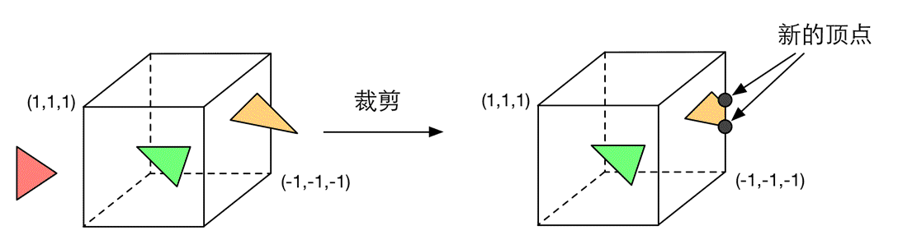</p>
</blockquote>
<h5 id="屏幕映射-Screen-Mapping"><a href="#屏幕映射-Screen-Mapping" class="headerlink" title="屏幕映射(Screen Mapping)"></a>屏幕映射(Screen Mapping)</h5><p>把每个图元的x和y坐标转换到屏幕坐标系下，这实际上是一个缩放的过程。屏幕坐标系是一个二维坐标系，它和我们用于显示画面的分辨率有很大关系。<br>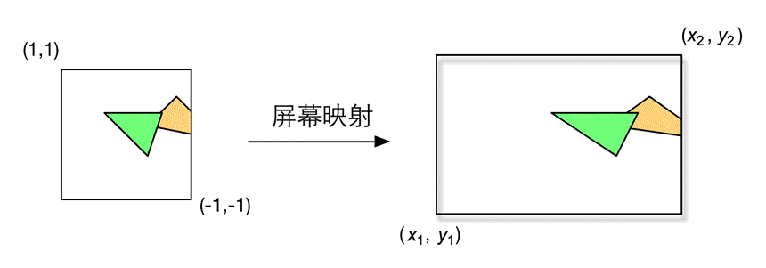</p>
<p>屏幕映射得到的屏幕坐标决定了这个顶点对应屏幕上哪个像素以及距离这个像素有多远。 屏幕映射不会对输入的z坐标做任何处理。实际上，屏幕坐标系和z坐标一起构成了<strong>窗口坐标系</strong>。这些值会被一起传递到光栅化阶段。</p>
<h4 id="光栅化阶段-Rasterizer-Stage-GPU"><a href="#光栅化阶段-Rasterizer-Stage-GPU" class="headerlink" title="光栅化阶段 Rasterizer Stage ( GPU )"></a>光栅化阶段 Rasterizer Stage ( GPU )</h4><blockquote>
<p>光栅化：是把顶点数据转换为片元的过程，具有将图转化为一个个栅格组成的图象的作用，特点是每个元素对应帧缓冲区中的一像素。（将以向量为基本结构的面转换为一个个点阵形式的像素。）</p>
</blockquote>
<p><strong>接受数据：</strong> 几何阶段准备好的顶点信息<br><strong>目标：</strong> 对几何阶段传递过来的<strong>屏幕空间的顶点信息</strong>进行处理,最终生成<strong>屏幕像素,</strong>渲染出图像</p>
<p>需要对上一个阶段得到的逐顶点数据（例如纹理坐标，顶点颜色等）进行插值，然后再进行逐像素处理。<br>例如对于三角形图元，得到的就是三个顶点的坐标和颜色信息等。而光栅化阶段要做的就是根据这三个顶点，计算出这个三角形<strong>覆盖了哪些像素</strong>，并为这些像素通过<strong>插值</strong>计算出它们的颜色。</p>
<h5 id="三角形设置-Triangle-Setup"><a href="#三角形设置-Triangle-Setup" class="headerlink" title="三角形设置(Triangle Setup)"></a>三角形设置(Triangle Setup)</h5><p>计算光栅化一个三角网格所需的信息。具体来说，上一个阶段输出的都是三角网格的顶点，但如果要得到整个三角网格对像素的覆盖情况，我们就必须计算每条边上的像素坐标。为了能够计算边界像素的坐标信息，我们就需要得到三角形边界的表示方式。这样一个计算三角网格表示数据的过程就叫做三角形设置。</p>
<h5 id="三角形遍历-Triangle-Traversal"><a href="#三角形遍历-Triangle-Traversal" class="headerlink" title="三角形遍历(Triangle Traversal)"></a>三角形遍历(Triangle Traversal)</h5><p>检查每个像素是否被一个三角网格所覆盖。如果被覆盖的话，就会生成一个片元。而这样一个找到哪些像素被三角网格覆盖的过程就是三角形遍历，这个阶段也被称为扫描变换。<br>三角形遍历阶段会根据上一个阶段的计算结果来判断一个三角网格覆盖了哪些像素，并使用三角网格3个顶点的顶点信息对整个覆盖区域的像素进行<strong>插值</strong>。<strong>像素</strong>和<strong>片元</strong>是一一对应的，每个像素都会生成一个片元，<strong>片元中的状态记录了对应像素的信息</strong>，是对三个顶点的信息进行插值得到的。<br>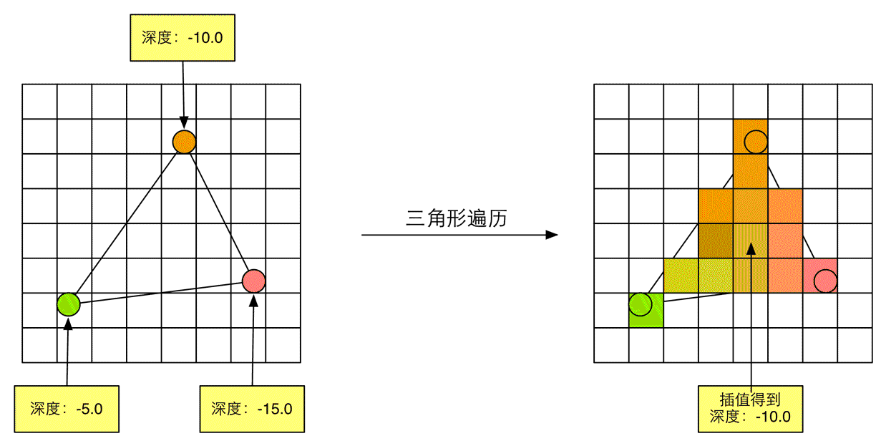</p>
<blockquote>
<p>片元包含了很多状态的集合，这些状态用于计算每个像素的最终颜色。这些状态包括了但不限于它的屏幕坐标，深度信息，以及其他从几何阶段输出的顶点信息，例如法线，纹理坐标等。</p>
</blockquote>
<h5 id="片元着色器-Fragment-Shader"><a href="#片元着色器-Fragment-Shader" class="headerlink" title="片元着色器(Fragment Shader)"></a>片元着色器(Fragment Shader)</h5><p>又称<strong>像素着色器(Pixel Shader)</strong>。逐片元的着色操作(Per-Fragment Operations)，输出是一个或者多个颜色值（即计算该片元对应像素的颜色，但不是最终颜色）。</p>
<ol>
<li>纹理采样<br>这一阶段可以完成很多重要的渲染技术，其中最重要的技术之一就是<strong>纹理采样</strong>。为了在片元着色器中进行纹理采样，我们通常会在顶点着色器阶段输出每个顶点对应的纹理坐标，然后经过光栅化阶段对三角网格的3个顶点对应的纹理坐标进行插值后，就可以得到其覆盖的片元的纹理坐标了。</li>
<li>计算光照(阴影、明暗…)</li>
</ol>
<p>根据上一步插值后的片元信息，片元着色器计算该片元的输出颜色 虽然片元着色器可以完成很多重要效果，但它的局限在于，它<strong>仅可以影响单个片元</strong>。也就是说，当执行片元着色器时，它不可以将自己的任何结果直接发送给它的邻居们。当然导数信息例外。</p>
<h5 id="逐片元操作"><a href="#逐片元操作" class="headerlink" title="逐片元操作"></a>逐片元操作</h5><ol>
<li>决定每个片元的可见性。这涉及了很多测试工作，例如深度测试，模板<strong>测试</strong>等。</li>
<li>如果一个片元通过了所有的测试，就需要把这个片元的颜色值和已经存储在颜色缓冲区中的颜色进行合并，或者所是<strong>混合</strong>。</li>
</ol>
<p>片元-&gt; 模板测试-&gt;深度测试-&gt;混合-&gt;颜色缓冲区</p>
<blockquote>
<p>模板测试<br>模板测试，可以作为一种丢弃片元的辅助方法，与之相关的是模板缓冲。如果开启了模板测试，GPU会首先读取（使用读取掩码）模板缓冲区中该片元位置的模板值，然后将该值和读取到（使用读取掩码）的参考值进行比较，这个比较函数可以是由开发者指定的，例如小于时舍弃该片元，或者大于等于时舍弃。如果这个片元没有通过这个测试，该片元就会被舍弃。不管一个片元有没有通过模板测试，我们都可以根据模板测试和下面的深度测试结果来修改模板缓冲区，这个修改操作也是由开发者指定的。开发者可以设置不同结果下的修改操作，例如，在失败时模板缓冲区保持不变，通过时将模板缓冲区中对应位置的值加1等。模板测试通常用于限制渲染的区域。另外模板测试还有一些更高级的用法，如渲染阴影，轮廓渲染等。</p>
<p>深度测试<br>如果开启了深度测试，GPU会把该片元的深度值和已经存在于深度缓冲区中的深度值进行比较。这个比较函数也是由开发者设置的。通常如果这个片元的深度值大于等于当前深度缓冲区中的值，那么就会舍弃它。因为我们总想只显示出离摄像机最近的物体，而那些被其他物体遮挡的就不需要出现在屏幕上。如果这个片元没有通过这个测试，该片元就会被舍弃。和模板测试不同的是，如果一个片元没有通过深度测试，它就没有权利更改深度缓冲区中的值。而如果它通过了测试，开发者还可以指定是否要用这个片元的深度值覆盖掉原有的深度值，这是通过开启/关闭<strong>深度写入</strong>来做到的。</p>
<p>混合<br>为什么需要混合？渲染过程是一个物体接着一个物体画到屏幕上的。而每个像素的颜色信息被存储在一个名为颜色缓冲的地方。因此，当我们执行这次渲染时，颜色缓冲中往往已经有了上次渲染之后的颜色结果，那么我们是使用这次渲染得到的颜色完全覆盖掉之前的结果，还是进行其他处理？这就是混合需要解决的问题。对于不透明物体，开发者可以关闭混合操作。但对于不透明物体，我们就需要使用混合操作来让这个物体看起来是透明的。</p>
</blockquote>
<h3 id="CPU与GPU"><a href="#CPU与GPU" class="headerlink" title="CPU与GPU"></a>CPU与GPU</h3><p>CPU在内存中建立以下资源</p>
<ul>
<li>顶点定义</li>
<li>顶点缓存</li>
<li>索引缓存</li>
<li>贴图</li>
<li>摄像机</li>
<li>投影</li>
</ul>
<p>CPU从内存中发送以下资源到显存中供GPU使用</p>
<ul>
<li>顶点定义</li>
<li>顶点缓存</li>
<li>索引缓存</li>
<li>贴图</li>
<li>坐标系变换矩阵</li>
<li>渲染状态</li>
<li>贴图采样方式</li>
</ul>
<h4 id="GPU渲染管线理解"><a href="#GPU渲染管线理解" class="headerlink" title="GPU渲染管线理解"></a>GPU渲染管线理解</h4><p>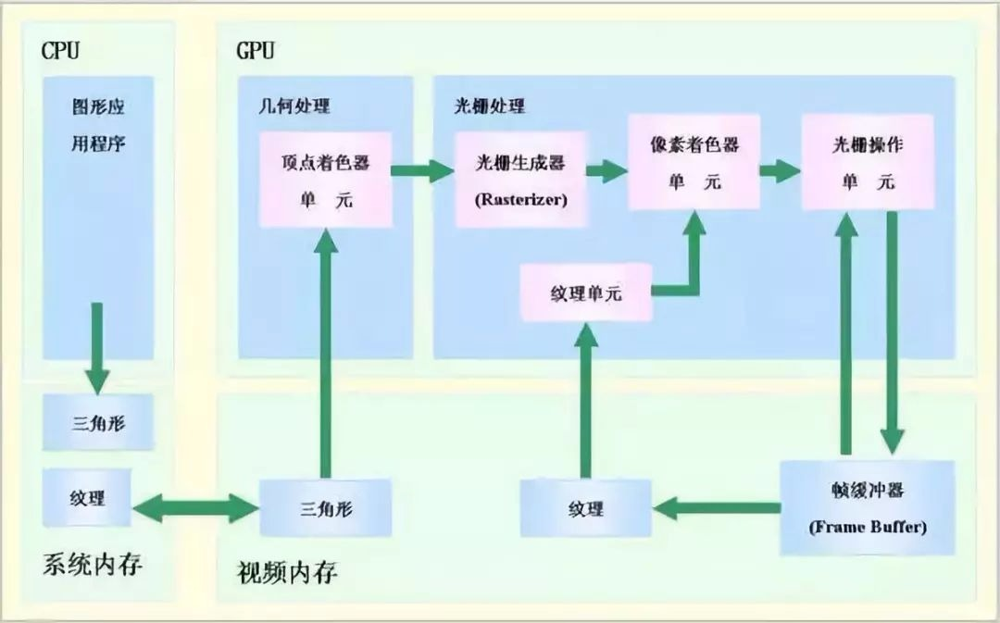</p>
<p><a href="https://www.cnblogs.com/timlly/p/11471507.html" target="_blank" rel="noopener">深入GPU硬件架构及运行机制</a></p>
<h2 id="数学相关具体处理过程"><a href="#数学相关具体处理过程" class="headerlink" title="数学相关具体处理过程"></a>数学相关具体处理过程</h2><h3 id="相关概念"><a href="#相关概念" class="headerlink" title="相关概念"></a>相关概念</h3><p>视锥体（view frustum）<br>frustum(截头锥体)</p>
<h3 id="坐标转换过程"><a href="#坐标转换过程" class="headerlink" title="坐标转换过程"></a>坐标转换过程</h3><p>物体空间(object space)-&gt;世界空间(World Space)-&gt;观察空间(View Space)-&gt;裁剪空间(clip space)-&gt;屏幕空间(Screen Space)</p>
<h4 id="NDC-Normalized-Device-Coordinate-归一化设备坐标"><a href="#NDC-Normalized-Device-Coordinate-归一化设备坐标" class="headerlink" title="NDC(Normalized Device Coordinate)归一化设备坐标"></a>NDC(Normalized Device Coordinate)归一化设备坐标</h4><p>在这一步会进行一个叫齐次除法的步骤，说白了就是各个点（x,y,z,w）会除以w的值（注：计算机图形学中经常使用四元数代表一个点，叫齐次空间，齐次点等 ）<br>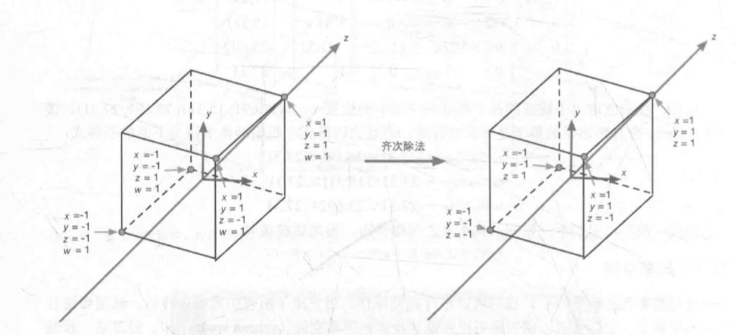<br>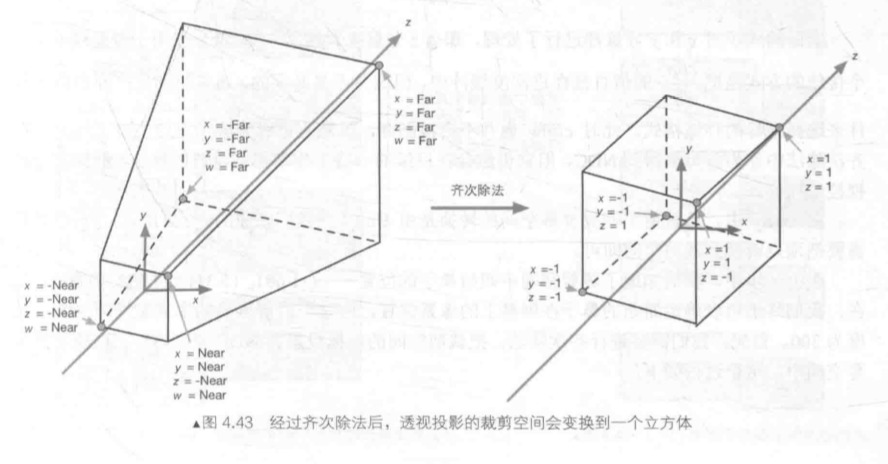</p>
<h4 id="屏幕空间（Screen-Space）"><a href="#屏幕空间（Screen-Space）" class="headerlink" title="屏幕空间（Screen Space）"></a>屏幕空间（Screen Space）</h4><p>pixelWidth:屏幕横向分辨率<br>pixelHeight:屏幕纵向分辨率<br>OpenGL规范<br>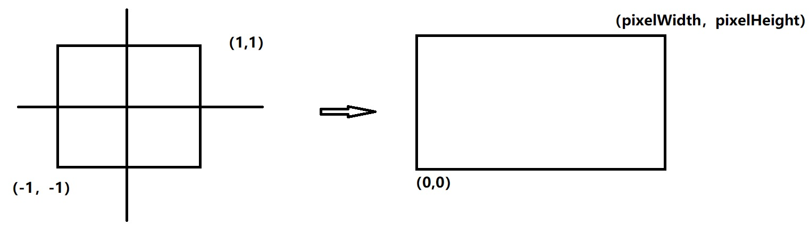<br>DirectX规范<br>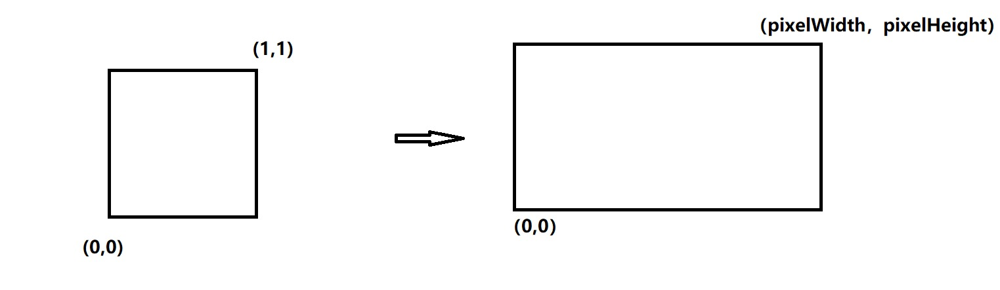</p>
<p>screenx={clipx<em>pixelWidth/(2</em>clipw)}+pixelWidth/2<br>screeny={clipy<em>pixelHeight/(2</em>clipw)}+pixelHeight/2</p>
<h3 id="Vertex-Shader-amp-Fragment-Shader"><a href="#Vertex-Shader-amp-Fragment-Shader" class="headerlink" title="Vertex Shader &amp; Fragment Shader"></a>Vertex Shader &amp; Fragment Shader</h3><h4 id="顶点着色器"><a href="#顶点着色器" class="headerlink" title="顶点着色器"></a>顶点着色器</h4><p>将物体从<strong>物体空间</strong>-&gt;<strong>世界空间</strong>-&gt;<strong>观察空间</strong>-&gt;<strong>裁剪空间</strong>就是顶点着色器的工作。</p>
<blockquote>
<ol>
<li>将物体空间的数据（点）作为顶点着色器的输入</li>
<li>将所有在自己范围中的点全部遍历一遍，就是每个点都会算进行加工</li>
<li>高度可编程配置！</li>
</ol>
</blockquote>
<h4 id="片元着色器"><a href="#片元着色器" class="headerlink" title="片元着色器"></a>片元着色器</h4><p> 将裁剪空间中的点从<strong>裁剪空间</strong>-&gt;<strong>屏幕空间</strong>就是片元着色器的工作。<br>片元着色器会返回一个四元数-（r,g,b,a）-&gt;分别为（red&lt;红&gt;，green&lt;绿&gt;，blue&lt;蓝&gt;，alpha&lt;透明度&gt;）</p>
<blockquote>
<ol>
<li>将裁减空间的数据（点）作为片元着色器的输入</li>
<li>将所有在自己范围中的像素全部遍历一遍（三角遍历Rasterizer—-Triangle Traversal），就是每个片元（像素）都会运算进行加工。</li>
<li>高度可编程配置！</li>
</ol>
</blockquote>
<h2 id="Shader-1"><a href="#Shader-1" class="headerlink" title="Shader"></a>Shader</h2><h3 id="简单的Shader-Demo"><a href="#简单的Shader-Demo" class="headerlink" title="简单的Shader Demo"></a>简单的Shader Demo</h3><figure class="highlight cs"><table><tr><td class="gutter"><pre><span class="line">1</span><br><span class="line">2</span><br><span class="line">3</span><br><span class="line">4</span><br><span class="line">5</span><br><span class="line">6</span><br><span class="line">7</span><br><span class="line">8</span><br><span class="line">9</span><br><span class="line">10</span><br><span class="line">11</span><br><span class="line">12</span><br><span class="line">13</span><br><span class="line">14</span><br><span class="line">15</span><br><span class="line">16</span><br><span class="line">17</span><br><span class="line">18</span><br><span class="line">19</span><br><span class="line">20</span><br><span class="line">21</span><br><span class="line">22</span><br><span class="line">23</span><br><span class="line">24</span><br><span class="line">25</span><br><span class="line">26</span><br><span class="line">27</span><br><span class="line">28</span><br><span class="line">29</span><br><span class="line">30</span><br><span class="line">31</span><br><span class="line">32</span><br><span class="line">33</span><br><span class="line">34</span><br><span class="line">35</span><br><span class="line">36</span><br><span class="line">37</span><br><span class="line">38</span><br><span class="line">39</span><br><span class="line">40</span><br><span class="line">41</span><br><span class="line">42</span><br><span class="line">43</span><br><span class="line">44</span><br></pre></td><td class="code"><pre><span class="line">Shader <span class="string">"Test/Shader"</span></span><br><span class="line">&#123;</span><br><span class="line"></span><br><span class="line">	SubShader</span><br><span class="line">	&#123;</span><br><span class="line">		Tags &#123; <span class="string">"RenderType"</span>=<span class="string">"Opaque"</span> &#125;</span><br><span class="line">		LOD <span class="number">100</span></span><br><span class="line"></span><br><span class="line">		Pass</span><br><span class="line">		&#123;</span><br><span class="line">			CGPROGRAM</span><br><span class="line">			<span class="meta">#<span class="meta-keyword">pragma</span> vertex vert//告诉编译器 顶点着色器叫什么名字</span></span><br><span class="line">			<span class="meta">#<span class="meta-keyword">pragma</span> fragment frag//告诉编译器 片元着色器叫什么名字</span></span><br><span class="line"></span><br><span class="line">			<span class="meta">#include "UnityCG.cginc"//包含内置文件，方便写代码</span></span><br><span class="line"></span><br><span class="line">			<span class="keyword">struct</span> appdata</span><br><span class="line">			&#123;</span><br><span class="line">				float4 vertex : POSITION;<span class="comment">//物体坐标</span></span><br><span class="line">			&#125;;</span><br><span class="line"></span><br><span class="line">			<span class="keyword">struct</span> v2f</span><br><span class="line">			&#123;</span><br><span class="line">				float4 vertex : SV_POSITION;<span class="comment">//裁剪空间坐标</span></span><br><span class="line">			&#125;;</span><br><span class="line"></span><br><span class="line"></span><br><span class="line"></span><br><span class="line">			<span class="function">v2f <span class="title">vert</span> (<span class="params">appdata v</span>)<span class="comment">//顶点着色器，以物体坐标为输入（appdata下的vertex）</span></span></span><br><span class="line"><span class="function"></span>			&#123;</span><br><span class="line">				v2f o;</span><br><span class="line">				o.vertex = UnityObjectToClipPos(v.vertex);<span class="comment">//将物体坐标变换到裁剪空间</span></span><br><span class="line">				<span class="keyword">return</span> o;<span class="comment">//返回裁剪空间的数据</span></span><br><span class="line">			&#125;</span><br><span class="line"></span><br><span class="line">			<span class="function">fixed4 <span class="title">frag</span> (<span class="params">v2f i</span>) : SV_Target<span class="comment">//片元着色器，以裁剪空间数据作为输入（上面顶点着色器的输出）</span></span></span><br><span class="line"><span class="function"></span>			&#123;</span><br><span class="line">				fixed4 col = fixed4(<span class="number">1</span>,<span class="number">1</span>,<span class="number">1</span>,<span class="number">1</span>);<span class="comment">//定义一个白色</span></span><br><span class="line">				<span class="keyword">return</span> col;<span class="comment">//返回白色</span></span><br><span class="line">			&#125;</span><br><span class="line">			ENDCG</span><br><span class="line">		&#125;</span><br><span class="line">	&#125;</span><br><span class="line">&#125;</span><br></pre></td></tr></table></figure>
<h3 id="接口与实现"><a href="#接口与实现" class="headerlink" title="接口与实现"></a>接口与实现</h3><p>UnityObjectToClipPos()</p>
<figure class="highlight cpp"><table><tr><td class="gutter"><pre><span class="line">1</span><br><span class="line">2</span><br><span class="line">3</span><br><span class="line">4</span><br><span class="line">5</span><br><span class="line">6</span><br><span class="line">7</span><br><span class="line">8</span><br><span class="line">9</span><br></pre></td><td class="code"><pre><span class="line"><span class="function"><span class="keyword">inline</span> float4 <span class="title">UnityObjectToClipPos</span><span class="params">(in float3 pos)</span></span></span><br><span class="line"><span class="function"></span>&#123;</span><br><span class="line">    <span class="comment">// More efficient than computing M*VP matrix product</span></span><br><span class="line">   <span class="keyword">return</span> mul(UNITY_MATRIX_VP, mul(unity_ObjectToWorld, float4(pos, <span class="number">1.0</span>)));</span><br><span class="line">&#125;</span><br><span class="line"><span class="function"><span class="keyword">inline</span> float4 <span class="title">UnityObjectToClipPos</span><span class="params">(float4 pos)</span> <span class="comment">// overload for float4; avoids "implicit truncation" warning for existing shaders</span></span></span><br><span class="line"><span class="function"></span>&#123;</span><br><span class="line">    <span class="keyword">return</span> UnityObjectToClipPos(pos.xyz);</span><br><span class="line">&#125;</span><br></pre></td></tr></table></figure>
<p>unity_ObjectToWorld是物体空间到世界空间的转换矩阵mul()矩阵乘法内置函数。<br>UNITY_MATRIX_VP（观察空间和裁剪空间合一起了），乘完后将从世界空间变换到裁剪空间。</p>
<p>完全手动自定义计算的话，这么写：<br><figure class="highlight cpp"><table><tr><td class="gutter"><pre><span class="line">1</span><br><span class="line">2</span><br><span class="line">3</span><br><span class="line">4</span><br><span class="line">5</span><br><span class="line">6</span><br><span class="line">7</span><br><span class="line">8</span><br></pre></td><td class="code"><pre><span class="line"><span class="function">float4 <span class="title">UnityObjectToClipPos</span><span class="params">(in float3 pos)</span></span></span><br><span class="line"><span class="function"></span>&#123;</span><br><span class="line">	float4 objectSpaceData = float4(pos, <span class="number">1.0f</span>);</span><br><span class="line">	float4 worldSpaceData = mul(unity_ObjectToWorld, objectSpaceData);</span><br><span class="line">	float4 viewSpaceData = mul(UNITY_MATRIX_V, worldSpaceData);</span><br><span class="line">	float4 clipSpaceData = mul(UNITY_MATRIX_P，viewSpaceData );</span><br><span class="line">	<span class="keyword">return</span> clipSpaceData;</span><br><span class="line">&#125;</span><br></pre></td></tr></table></figure></p>
<h2 id="Ref"><a href="#Ref" class="headerlink" title="Ref"></a>Ref</h2><p><a href="https://www.cnblogs.com/SouthBegonia/p/11564407.html" target="_blank" rel="noopener">https://www.cnblogs.com/SouthBegonia/p/11564407.html</a><br><a href="https://blog.csdn.net/AvatarForTest/article/details/80438344" target="_blank" rel="noopener">https://blog.csdn.net/AvatarForTest/article/details/80438344</a><br><a href="http://m.elecfans.com/article/713834.html" target="_blank" rel="noopener">http://m.elecfans.com/article/713834.html</a><br><a href="https://juejin.im/post/6844903975712489485" target="_blank" rel="noopener">https://juejin.im/post/6844903975712489485</a><br>《Unity Shader入门精要》</p>
 
      <!-- reward -->
      
      <div id="reword-out">
        <div id="reward-btn">
          Donate
        </div>
      </div>
      
    </div>
    

    <!-- copyright -->
    
    <div class="declare">
      <ul class="post-copyright">
        <li>
          <i class="ri-copyright-line"></i>
          <strong>Copyright： </strong>
          
          Copyright is owned by the author. For commercial reprints, please contact the author for authorization. For non-commercial reprints, please indicate the source.
          
        </li>
      </ul>
    </div>
    
    <footer class="article-footer">
       
<div class="share-btn">
      <span class="share-sns share-outer">
        <i class="ri-share-forward-line"></i>
        分享
      </span>
      <div class="share-wrap">
        <i class="arrow"></i>
        <div class="share-icons">
          
          <a class="weibo share-sns" href="javascript:;" data-type="weibo">
            <i class="ri-weibo-fill"></i>
          </a>
          <a class="weixin share-sns wxFab" href="javascript:;" data-type="weixin">
            <i class="ri-wechat-fill"></i>
          </a>
          <a class="qq share-sns" href="javascript:;" data-type="qq">
            <i class="ri-qq-fill"></i>
          </a>
          <a class="douban share-sns" href="javascript:;" data-type="douban">
            <i class="ri-douban-line"></i>
          </a>
          <!-- <a class="qzone share-sns" href="javascript:;" data-type="qzone">
            <i class="icon icon-qzone"></i>
          </a> -->
          
          <a class="facebook share-sns" href="javascript:;" data-type="facebook">
            <i class="ri-facebook-circle-fill"></i>
          </a>
          <a class="twitter share-sns" href="javascript:;" data-type="twitter">
            <i class="ri-twitter-fill"></i>
          </a>
          <a class="google share-sns" href="javascript:;" data-type="google">
            <i class="ri-google-fill"></i>
          </a>
        </div>
      </div>
</div>

<div class="wx-share-modal">
    <a class="modal-close" href="javascript:;"><i class="ri-close-circle-line"></i></a>
    <p>扫一扫，分享到微信</p>
    <div class="wx-qrcode">
      
    </div>
</div>

<div id="share-mask"></div>  
  <ul class="article-tag-list" itemprop="keywords"><li class="article-tag-list-item"><a class="article-tag-list-link" href="/tags/CG/" rel="tag">CG</a></li><li class="article-tag-list-item"><a class="article-tag-list-link" href="/tags/Rendering/" rel="tag">Rendering</a></li></ul>

    </footer>
  </div>

   
  <nav class="article-nav">
    
      <a href="/2020/10/25/Basic-Mesh-in-Unity3D/" class="article-nav-link">
        <strong class="article-nav-caption">上一篇</strong>
        <div class="article-nav-title">
          
            【基础】U3D中的Mesh
          
        </div>
      </a>
    
    
      <a href="/2020/10/25/Load-AssetBundle/" class="article-nav-link">
        <strong class="article-nav-caption">下一篇</strong>
        <div class="article-nav-title">【加载】Asset bundle</div>
      </a>
    
  </nav>

  
   
    
    <script src="https://cdn.staticfile.org/twikoo/1.4.18/twikoo.all.min.js"></script>
    <div id="twikoo" class="twikoo"></div>
    <script>
        twikoo.init({
            envId: ""
        })
    </script>
 
</article>

</section>
      <footer class="footer">
  <div class="outer">
    <ul>
      <li>
        Copyrights &copy;
        2015-2023
        <i class="ri-heart-fill heart_icon"></i> Prin
      </li>
    </ul>
    <ul>
      <li>
        
      </li>
    </ul>
    <ul>
      <li>
        
        
        <span>
  <span><i class="ri-user-3-fill"></i>Visitors:<span id="busuanzi_value_site_uv"></span></span>
  <span class="division">|</span>
  <span><i class="ri-eye-fill"></i>Views:<span id="busuanzi_value_page_pv"></span></span>
</span>
        
      </li>
    </ul>
    <ul>
      
    </ul>
    <ul>
      
    </ul>
    <ul>
      <li>
        <!-- cnzz统计 -->
        
        <script type="text/javascript" src='https://s9.cnzz.com/z_stat.php?id=1278069914&amp;web_id=1278069914'></script>
        
      </li>
    </ul>
  </div>
</footer>    
    </main>
    <div class="float_btns">
      <div class="totop" id="totop">
  <i class="ri-arrow-up-line"></i>
</div>

<div class="todark" id="todark">
  <i class="ri-moon-line"></i>
</div>

    </div>
    <aside class="sidebar on">
      <button class="navbar-toggle"></button>
<nav class="navbar">
  
  <div class="logo">
    <a href="/"></a>
  </div>
  
  <ul class="nav nav-main">
    
    <li class="nav-item">
      <a class="nav-item-link" href="/">主页</a>
    </li>
    
    <li class="nav-item">
      <a class="nav-item-link" href="/archives">归档</a>
    </li>
    
    <li class="nav-item">
      <a class="nav-item-link" href="/categories">分类</a>
    </li>
    
    <li class="nav-item">
      <a class="nav-item-link" href="/tags">标签</a>
    </li>
    
    <li class="nav-item">
      <a class="nav-item-link" href="/friends">友链</a>
    </li>
    
    <li class="nav-item">
      <a class="nav-item-link" href="/about">关于我</a>
    </li>
    
    <li class="nav-item">
      <a class="nav-item-link" href="/categories/Unreal">虚幻引擎</a>
    </li>
    
  </ul>
</nav>
<nav class="navbar navbar-bottom">
  <ul class="nav">
    <li class="nav-item">
      
      <a class="nav-item-link nav-item-search"  title="Search">
        <i class="ri-search-line"></i>
      </a>
      
      
      <a class="nav-item-link" target="_blank" href="/atom.xml" title="RSS Feed">
        <i class="ri-rss-line"></i>
      </a>
      
    </li>
  </ul>
</nav>
<div class="search-form-wrap">
  <div class="local-search local-search-plugin">
  <input type="search" id="local-search-input" class="local-search-input" placeholder="Search...">
  <div id="local-search-result" class="local-search-result"></div>
</div>
</div>
    </aside>
    <div id="mask"></div>

<!-- #reward -->
<div id="reward">
  <span class="close"><i class="ri-close-line"></i></span>
  <p class="reward-p"><i class="ri-cup-line"></i>请我喝杯咖啡吧~</p>
  <div class="reward-box">
    
    <div class="reward-item">
      
      <span class="reward-type">支付宝</span>
    </div>
    
    
    <div class="reward-item">
      
      <span class="reward-type">微信</span>
    </div>
    
  </div>
</div>
    
<script src="/js/jquery-3.6.0.min.js"></script>
 
<script src="/js/lazyload.min.js"></script>

<!-- Tocbot -->
 
<script src="/js/tocbot.min.js"></script>

<script>
  tocbot.init({
    tocSelector: ".tocbot",
    contentSelector: ".article-entry",
    headingSelector: "h1, h2, h3, h4, h5, h6",
    hasInnerContainers: true,
    scrollSmooth: true,
    scrollContainer: "main",
    positionFixedSelector: ".tocbot",
    positionFixedClass: "is-position-fixed",
    fixedSidebarOffset: "auto",
  });
</script>

<script src="https://cdn.staticfile.org/jquery-modal/0.9.2/jquery.modal.min.js"></script>
<link
  rel="stylesheet"
  href="https://cdn.staticfile.org/jquery-modal/0.9.2/jquery.modal.min.css"
/>
<script src="https://cdn.staticfile.org/justifiedGallery/3.8.1/js/jquery.justifiedGallery.min.js"></script>

<script src="/dist/main.js"></script>

<!-- ImageViewer -->
 <!-- Root element of PhotoSwipe. Must have class pswp. -->
<div class="pswp" tabindex="-1" role="dialog" aria-hidden="true">

    <!-- Background of PhotoSwipe. 
         It's a separate element as animating opacity is faster than rgba(). -->
    <div class="pswp__bg"></div>

    <!-- Slides wrapper with overflow:hidden. -->
    <div class="pswp__scroll-wrap">

        <!-- Container that holds slides. 
            PhotoSwipe keeps only 3 of them in the DOM to save memory.
            Don't modify these 3 pswp__item elements, data is added later on. -->
        <div class="pswp__container">
            <div class="pswp__item"></div>
            <div class="pswp__item"></div>
            <div class="pswp__item"></div>
        </div>

        <!-- Default (PhotoSwipeUI_Default) interface on top of sliding area. Can be changed. -->
        <div class="pswp__ui pswp__ui--hidden">

            <div class="pswp__top-bar">

                <!--  Controls are self-explanatory. Order can be changed. -->

                <div class="pswp__counter"></div>

                <button class="pswp__button pswp__button--close" title="Close (Esc)"></button>

                <button class="pswp__button pswp__button--share" style="display:none" title="Share"></button>

                <button class="pswp__button pswp__button--fs" title="Toggle fullscreen"></button>

                <button class="pswp__button pswp__button--zoom" title="Zoom in/out"></button>

                <!-- Preloader demo http://codepen.io/dimsemenov/pen/yyBWoR -->
                <!-- element will get class pswp__preloader--active when preloader is running -->
                <div class="pswp__preloader">
                    <div class="pswp__preloader__icn">
                        <div class="pswp__preloader__cut">
                            <div class="pswp__preloader__donut"></div>
                        </div>
                    </div>
                </div>
            </div>

            <div class="pswp__share-modal pswp__share-modal--hidden pswp__single-tap">
                <div class="pswp__share-tooltip"></div>
            </div>

            <button class="pswp__button pswp__button--arrow--left" title="Previous (arrow left)">
            </button>

            <button class="pswp__button pswp__button--arrow--right" title="Next (arrow right)">
            </button>

            <div class="pswp__caption">
                <div class="pswp__caption__center"></div>
            </div>

        </div>

    </div>

</div>

<link rel="stylesheet" href="https://cdn.staticfile.org/photoswipe/4.1.3/photoswipe.min.css">
<link rel="stylesheet" href="https://cdn.staticfile.org/photoswipe/4.1.3/default-skin/default-skin.min.css">
<script src="https://cdn.staticfile.org/photoswipe/4.1.3/photoswipe.min.js"></script>
<script src="https://cdn.staticfile.org/photoswipe/4.1.3/photoswipe-ui-default.min.js"></script>

<script>
    function viewer_init() {
        let pswpElement = document.querySelectorAll('.pswp')[0];
        let $imgArr = document.querySelectorAll(('.article-entry img:not(.reward-img)'))

        $imgArr.forEach(($em, i) => {
            $em.onclick = () => {
                // slider展开状态
                // todo: 这样不好，后面改成状态
                if (document.querySelector('.left-col.show')) return
                let items = []
                $imgArr.forEach(($em2, i2) => {
                    let img = $em2.getAttribute('data-idx', i2)
                    let src = $em2.getAttribute('data-target') || $em2.getAttribute('src')
                    let title = $em2.getAttribute('alt')
                    // 获得原图尺寸
                    const image = new Image()
                    image.src = src
                    items.push({
                        src: src,
                        w: image.width || $em2.width,
                        h: image.height || $em2.height,
                        title: title
                    })
                })
                var gallery = new PhotoSwipe(pswpElement, PhotoSwipeUI_Default, items, {
                    index: parseInt(i)
                });
                gallery.init()
            }
        })
    }
    viewer_init()
</script> 
<!-- MathJax -->

<!-- Katex -->

<!-- busuanzi  -->
 
<script src="/js/busuanzi-2.3.pure.min.js"></script>
 
<!-- ClickLove -->

<!-- ClickBoom1 -->

<!-- ClickBoom2 -->

<!-- CodeCopy -->
 
<link rel="stylesheet" href="/css/clipboard.css">
 <script src="https://cdn.staticfile.org/clipboard.js/2.0.10/clipboard.min.js"></script>
<script>
  function wait(callback, seconds) {
    var timelag = null;
    timelag = window.setTimeout(callback, seconds);
  }
  !function (e, t, a) {
    var initCopyCode = function(){
      var copyHtml = '';
      copyHtml += '<button class="btn-copy" data-clipboard-snippet="">';
      copyHtml += '<i class="ri-file-copy-2-line"></i><span>COPY</span>';
      copyHtml += '</button>';
      $(".highlight .code pre").before(copyHtml);
      $(".article pre code").before(copyHtml);
      var clipboard = new ClipboardJS('.btn-copy', {
        target: function(trigger) {
          return trigger.nextElementSibling;
        }
      });
      clipboard.on('success', function(e) {
        let $btn = $(e.trigger);
        $btn.addClass('copied');
        let $icon = $($btn.find('i'));
        $icon.removeClass('ri-file-copy-2-line');
        $icon.addClass('ri-checkbox-circle-line');
        let $span = $($btn.find('span'));
        $span[0].innerText = 'COPIED';
        
        wait(function () { // 等待两秒钟后恢复
          $icon.removeClass('ri-checkbox-circle-line');
          $icon.addClass('ri-file-copy-2-line');
          $span[0].innerText = 'COPY';
        }, 2000);
      });
      clipboard.on('error', function(e) {
        e.clearSelection();
        let $btn = $(e.trigger);
        $btn.addClass('copy-failed');
        let $icon = $($btn.find('i'));
        $icon.removeClass('ri-file-copy-2-line');
        $icon.addClass('ri-time-line');
        let $span = $($btn.find('span'));
        $span[0].innerText = 'COPY FAILED';
        
        wait(function () { // 等待两秒钟后恢复
          $icon.removeClass('ri-time-line');
          $icon.addClass('ri-file-copy-2-line');
          $span[0].innerText = 'COPY';
        }, 2000);
      });
    }
    initCopyCode();
  }(window, document);
</script>
 
<!-- CanvasBackground -->

<script>
  if (window.mermaid) {
    mermaid.initialize({ theme: "forest" });
  }
</script>


    
    

  </div>
<script type="text/x-mathjax-config">
    MathJax.Hub.Config({
        tex2jax: {
            inlineMath: [ ["$","$"], ["\\(","\\)"] ],
            skipTags: ['script', 'noscript', 'style', 'textarea', 'pre', 'code'],
            processEscapes: true
        }
    });
    MathJax.Hub.Queue(function() {
        var all = MathJax.Hub.getAllJax();
        for (var i = 0; i < all.length; ++i)
            all[i].SourceElement().parentNode.className += ' has-jax';
    });
</script>
<script src="https://cdnjs.cloudflare.com/ajax/libs/mathjax/2.7.6/MathJax.js?config=TeX-MML-AM_CHTML"></script>

</body>

</html>